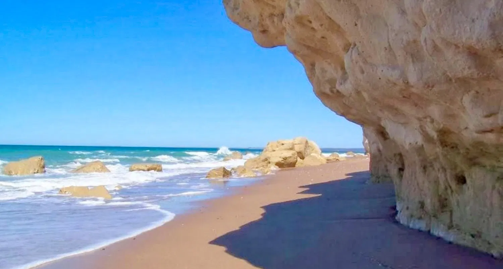

río negro, según la constitución: provincia de río negro o provincia del río negro. es una de las veintitrésprovincias que componen la república argentina y uno de los veinticuatro estados autogobernados o jurisdicciones de primer orden que conforman el país, y que a su vez son distritos electorales legislativos nacionales.su capital es viedma y su ciudad más poblada, san carlos de bariloche
Ubicada al centro-norte de la región patagónica (en la mitad sur del país).
Debido a su ubicación geográfica y a su extensión este-oeste, Río Negro es una de las provincias argentinas con mayor diversidad geográfica. La mayor parte del territorio presenta clima frío seco. En la cordillera tiene precipitaciones de 2000 a 3500 mm anuales y en el resto de 600 a 660 mm. El invierno es riguroso, y el verano presenta altas temperaturas, las cuales pueden variar de –25 ºC (Maquinchao) hasta poco más de 45ºC (Choele Choel). Predominan los vientos secos del oeste y sudoeste. En la zona de la cordillera prevalece el bosque frío, llamado bosque andino patagónico, con abundancia de coihues , cipreses y maitenes. En las regiones más húmedas predomina la selva valdiviana, que se diferencia del anterior en la presencia de helechos, musgos, enredaderas y epífitas. En las mesetas, en cambio, la vegetación predominante son los arbustos y pastos duros y bajos o tusacs. En invierno las nevadas son comunes en toda la región siendo mayores cerca de la Cordillera de los Andes.
En la provincia se ubica el sitio arqueológico El Trébol (Bariloche), un abrigo rocoso tipo cueva con arte rupestre y restos de megafauna con marcas de consumo humano, que aportó evidencia de presencia humana datada en 10 500 años AP durante el Holoceno temprano. Esto da cuenta de que al menos desde ese momento el territorio estaba poblado por humanos (probablemente los primeros pobladores sean previos pero no se preservó la evidencia material).
Los principales complejos productivos que dinamizan la economía de la provincia y explican el Producto Bruto provincial son los vinculados a la fruticultura, el turismo, la explotación de hidrocarburos, la minería, la pesca y la ganadería, siendo muy marcada la especialización de estas actividades por región. Fruticultura: concentrada en las zonas de valles. Predominan los cultivos de frutales (manzanas y peras). También poseen cultivos de hortalizas (tomate y cebolla), y frutas finas (frambuesa, guinda y frutilla). Ganadería: Desarrolla la ganadería en forma intensiva, enviando terneros para invernada en regiones la Provincia de Buenos Aires y en la Provincia de La Pampa. La cabaña ovina constituye el 13 % del total nacional y se extiende por toda la zona central y sur de la provincia. Industria: Producción de sidra y jugos en el Alto valle (desde Cipolletti hasta Villa Regina), además de lanas finas, pesca con captura de merluza, calamar y langostinos. Minería: Explotación de hierro en Sierra Grande; bentonita y piedra laja en la Ingeniero Jacobacci y Los Menucos; sal en San Antonio; petróleo y gas en Catriel y el norte provincial.
En las últimas décadas, el turismo se convirtió en una gran fuente de ingresos en la provincia, especialmente para las zonas andina y costera. Las principales ciudades turísticas son Las Grutas en la costa, y San Carlos de Bariloche en la Cordillera. Las zonas turísticas más desarrolladas de la provincia son: La zona cordillerana, donde destaca la localidad de Bariloche, de hermosos paisajes y amplia infraestructura turística, lindera con el parque nacional Nahuel Huapi (el primero de la Argentina). Hacia el sur se encuentra la localidad de El Bolsón famosa por sus verdes bosques y montañas y su clima benigno. Además de los visitantes nacionales, esta región atrae numerosos turistas extranjeros, principalmente provenientes de Chile y Brasil, así como de Europa, Asia y los Estados Unidos. La costa atlántica, donde abundan las playas de bellas arenas con una oferta compleja y un factor adicional, el contar algunas de las aguas más cálidas del país, debido al calentamiento del agua sobre la extensa restinga, llegando a los 25 °C. Esta zona no cuenta con tantos turistas extranjeros como la zona cordillerana, pero es un destino turístico muy importante a nivel nacional atrayendo a miles de turistas de todo el país todos los años, principalmente del resto de la Patagonia, que aprovechan el hecho de ser el único lugar de la región donde las aguas son aptas para bañarse. Destacan las ciudades de Las Grutas, Playas Doradas, Costa Dorada, El Cóndor, La Lobería, y San Antonio Este.
San Carlos de Bariloche
Parque nacional Nahuel Huapi.
El Bolsón.
Playas Doradas.
El Manso.
El Foyel.
Villa Mascardi.
Las Grutas.
Cerro Catedral.
Cerro Tronador.
Dina Huapi.
Meseta de Somuncura.
Valle del Río Negro.
Viedma.
Playas Doradas.
Urbanización Costa Dorada.
Balneario El Cóndor.
La Lobería.
Las Grutas.
San Antonio Este.
Los ríos pueden tener pendiente hacia el Océano Atlántico, como por ejemplo, el Río Colorado (148 m³/s), o hacia el Océano Pacífico, como el Río Manso. Estos ríos presentan crecientes que se originan en los deshielos y lluvias de otoño. El Río Colorado presenta su mayor caudal en primavera. Existen lagos al oeste de la provincia, como el Lago Nahuel Huapi, el Mascardi y el Steffen. Además posee varias centrales hidroeléctricas sobre el Río Limay. El río más importante de la provincia es el Río Negro (1.014 m³/s), también conocido como Currú Leuvú, bautizado así por los indígenas originarios. Es el más grande de la Patagonia Argentina y uno de los cinco más caudalosos del país. Su desembocadura se encuentra sobre el Océano Atlántico a solo 30 km de Viedma, la capital provincial, lo que produce un régimen de mareas con diversas características en ambos márgenes del río, del lado de la provincia de Río Negro se caracteriza por playas anchas y menos desarrolladas del lado de la provincia de Buenos Aires,brindando a los que disfrutan en temporada de verano de exóticos balnearios y sectores de pesca con redes.
El Sistema Provincial de Áreas Naturales Protegidas de la provincia gestiona y administra una serie de áreas distribuidas en todo su territorio, de diferentes dimensiones y con distintos grados de control. Entre ellas:
Área natural protegida Punta Bermeja
Área natural protegida Complejo Islote Lobos
Reserva Caleta de Los Loros
Área natural protegida Bahía de San Antonio
Área natural protegida Puerto Lobos
Área natural protegida Meseta de Somuncurá
Área natural protegida Río Azul-Lago Escondido
Paisaje protegido Río Limay
Área protegida Valle Cretácico
Parque provincial Parque Azul
Parque Laguna Carri Laufquen
Área natural protegida Cipresal de las Guaitecas.
